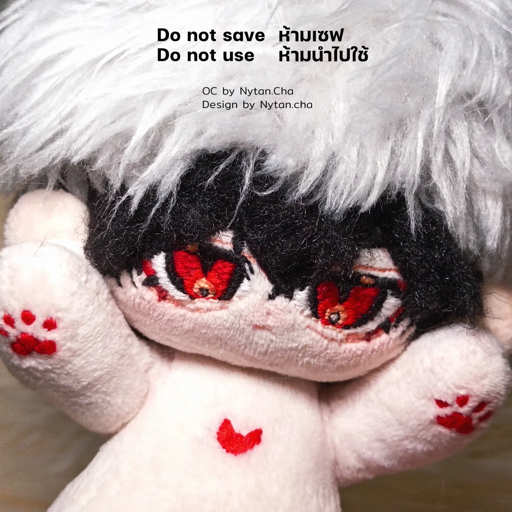
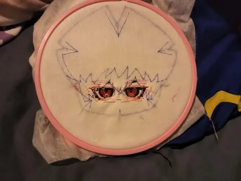
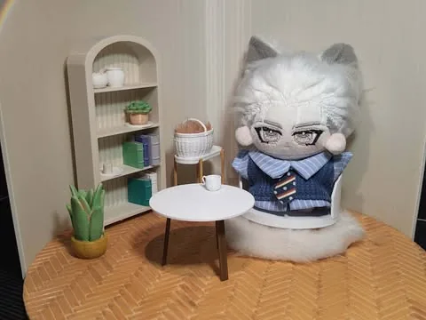
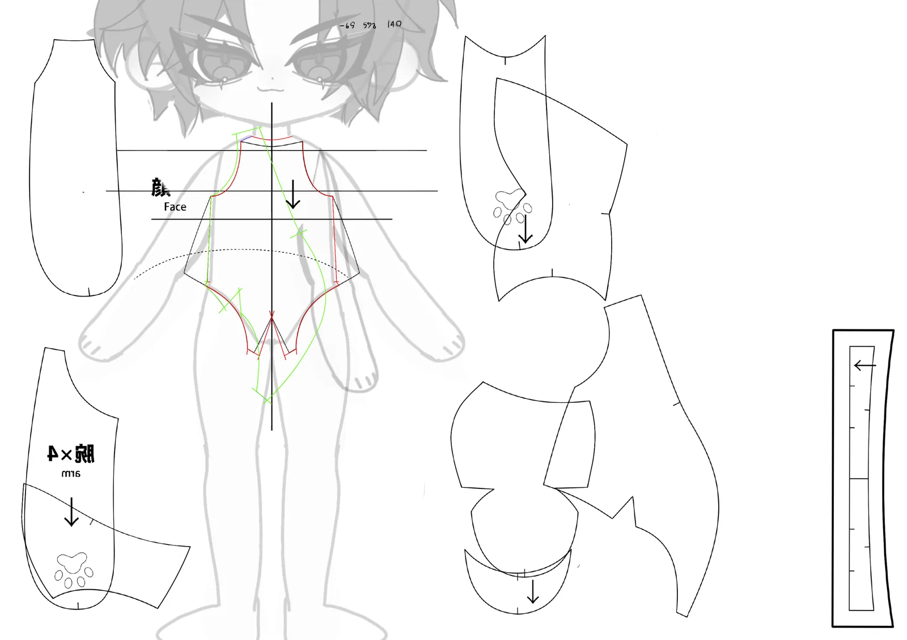
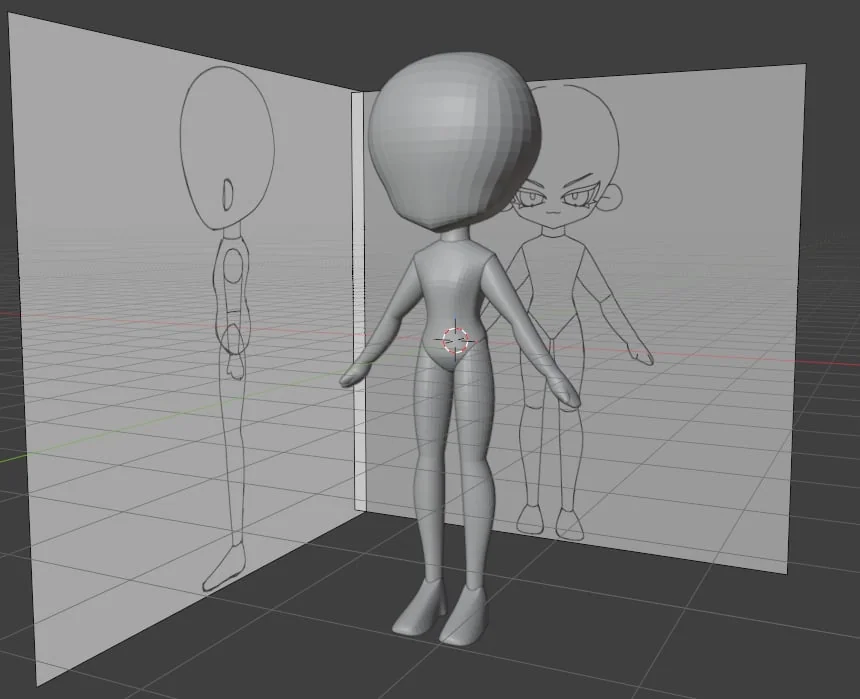
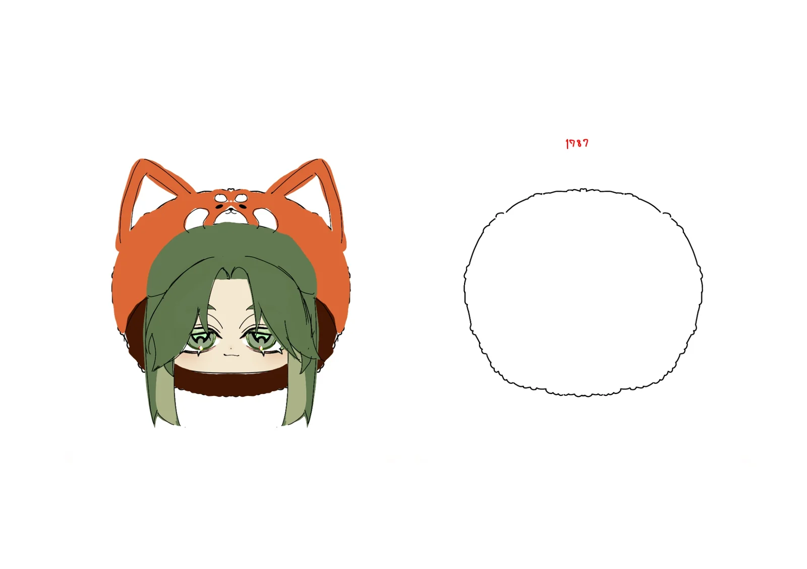
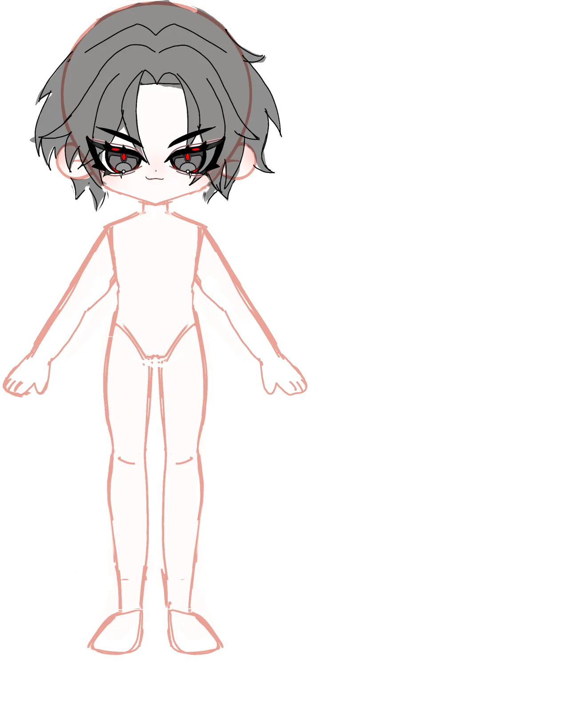
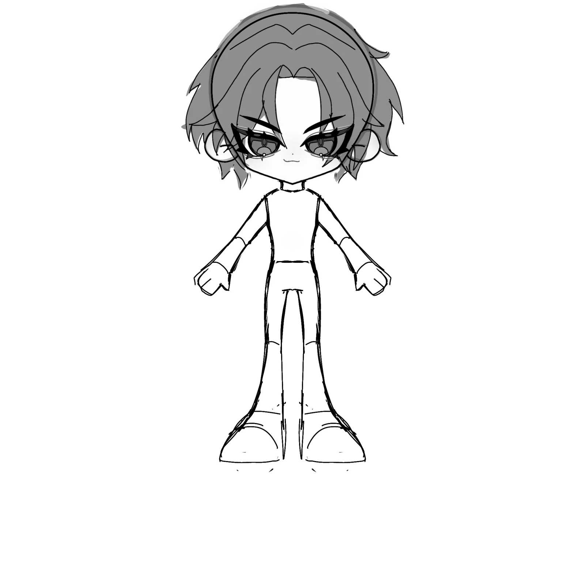

Cotton Dolls
Cotton dolls of original characters (OCs, characters people create themselves), with my design sheets, embroidered faces, removable magnetic ears, and a round diorama I designed.
In short: Solo work, for my own characters and for commissions. I make the design sheets, embroidered faces, magnetic ears and diorama, and I’m developing my own pattern. The dolls shown are done, and commissions are ongoing.
- When
- Ongoing
- Team / role
- Solo · self-initiated
- Tools
- Sewing · embroidery · magnets · Blender (pattern development) · 3D printing
- Size
- About 18–20 cm, small size about 10 cm
- Status
- Dolls shown here done
Doll commissions ongoing
My own pattern in progress

Problem
Each doll has to capture one specific person’s original character, including its proportions and features.
My own body pattern isn’t finished yet. The bodies shown here use a purchased pattern (red-eyed doll) and a public pattern (white cat-ear doll), and purchased patterns don’t allow licensed characters.
What I decided
- OC orders only. The purchased body pattern does not allow licensed characters, so I only take commissions for original characters.
- Design sheet first. Each character gets a front/back design sheet before sewing.
- Embroidered faces, stitched in a hoop.
- Removable magnetic ears, so the cat ears come on and off.
- A round diorama I designed. The furniture inside is downloaded models I 3D-printed.
- My own pattern. I model the character in Blender from my reference drawings, then unfold its surface using UV mapping to make fabric pattern pieces. It’s still in development, and because it will be sold, only a work-in-progress piece is shown.
Result
I take doll commissions now. My own pattern is still in development. The dolls shown are my own characters. Commission work is not shown.
Gallery







Sketches & process


My role
I designed the characters, drew the reference artwork and embroidered the faces myself.
I do the design sheets, embroidery and sewing, magnetic ears, diorama design and pattern development. The body patterns of the two dolls shown are not mine. One is purchased and one is public.